Web Server Statistics for arctoys.com
Web Server Statistics for arctoys.com
Program started on Sun, Feb 26 2017 at 7:06 PM.
Analyzed requests from Tue, Jan 03 2017 at 2:32 PM to Sun, Feb 26 2017 at 6:29 PM (54.16 days).
Web Server Statistics for arctoys.comProgram started on Sun, Feb 26 2017 at 7:06 PM.
Analyzed requests from Tue, Jan 03 2017 at 2:32 PM to Sun, Feb 26 2017 at 6:29 PM (54.16 days).
(Go To: Top | General Summary | Monthly Report | Daily Summary | Hourly Summary | Domain Report | Organization Report | Redirected Referrer Report | Failed Referrer Report | Referring Site Report | Browser Report | Browser Summary | Operating System Report | Status Code Report | File Size Report | File Type Report | Directory Report | Request Report)
Figures in parentheses refer to the 7-day period ending Feb 26 2017 at 7:06 PM.
Successful requests: 804 (75)
Average successful requests per day: 14 (10)
Successful requests for pages: 489 (73)
Average successful requests for pages per day: 9 (10)
Failed requests: 463 (3)
Redirected requests: 27 (1)
Distinct files requested: 90 (2)
Distinct hosts served: 289 (5)
Data transferred: 1.33 megabytes (25.08 kilobytes)
Average data transferred per day: 25.15 kilobytes (3.58 kilobytes)
(Go To: Top | General Summary | Monthly Report | Daily Summary | Hourly Summary | Domain Report | Organization Report | Redirected Referrer Report | Failed Referrer Report | Referring Site Report | Browser Report | Browser Summary | Operating System Report | Status Code Report | File Size Report | File Type Report | Directory Report | Request Report)
Each unit ( ) represents 8 requests for pages or part thereof.
) represents 8 requests for pages or part thereof.
| month | #reqs | #pages | |
|---|---|---|---|
| Jan 2017 | 325 | 280 |   |
| Feb 2017 | 479 | 209 |   |
Busiest month: Jan 2017 (280 requests for pages).
(Go To: Top | General Summary | Monthly Report | Daily Summary | Hourly Summary | Domain Report | Organization Report | Redirected Referrer Report | Failed Referrer Report | Referring Site Report | Browser Report | Browser Summary | Operating System Report | Status Code Report | File Size Report | File Type Report | Directory Report | Request Report)
Each unit () represents 3 requests for pages or part thereof.
| day | #reqs | #pages | |
|---|---|---|---|
| Sun | 50 | 45 |  |
| Mon | 69 | 55 | |
| Tue | 268 | 85 | |
| Wed | 186 | 109 | |
| Thu | 103 | 72 | |
| Fri | 61 | 58 | |
| Sat | 67 | 65 | |
(Go To: Top | General Summary | Monthly Report | Daily Summary | Hourly Summary | Domain Report | Organization Report | Redirected Referrer Report | Failed Referrer Report | Referring Site Report | Browser Report | Browser Summary | Operating System Report | Status Code Report | File Size Report | File Type Report | Directory Report | Request Report)
Each unit () represents 1 request for a page.
| hour | #reqs | #pages | |
|---|---|---|---|
| 0 | 24 | 23 | |
| 1 | 14 | 11 | |
| 2 | 23 | 23 | |
| 3 | 16 | 13 | |
| 4 | 15 | 13 | |
| 5 | 22 | 22 | |
| 6 | 40 | 37 | |
| 7 | 21 | 19 | |
| 8 | 31 | 26 | |
| 9 | 46 | 29 | |
| 10 | 39 | 22 | |
| 11 | 42 | 31 | |
| 12 | 17 | 15 | |
| 13 | 19 | 18 | |
| 14 | 43 | 26 | |
| 15 | 54 | 31 | |
| 16 | 34 | 15 | |
| 17 | 30 | 15 | |
| 18 | 20 | 14 | |
| 19 | 34 | 18 | |
| 20 | 52 | 14 | |
| 21 | 105 | 18 | |
| 22 | 44 | 18 | |
| 23 | 19 | 18 | |
(Go To: Top | General Summary | Monthly Report | Daily Summary | Hourly Summary | Domain Report | Organization Report | Redirected Referrer Report | Failed Referrer Report | Referring Site Report | Browser Report | Browser Summary | Operating System Report | Status Code Report | File Size Report | File Type Report | Directory Report | Request Report)
Listing domains, sorted by the amount of traffic.
| #reqs | %bytes | domain |
|---|---|---|
| 804 | 100% | [unresolved numerical addresses] |
(Go To: Top | General Summary | Monthly Report | Daily Summary | Hourly Summary | Domain Report | Organization Report | Redirected Referrer Report | Failed Referrer Report | Referring Site Report | Browser Report | Browser Summary | Operating System Report | Status Code Report | File Size Report | File Type Report | Directory Report | Request Report)
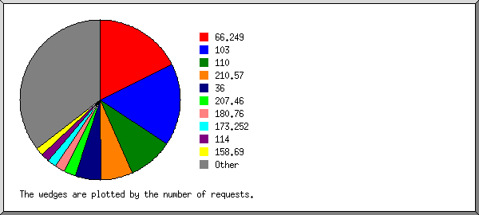
Listing the top 20 organizations by the number of requests, sorted by the number of requests.
| #reqs | %bytes | organization |
|---|---|---|
| 143 | 3.40% | 66.249 |
| 133 | 3.36% | 103 |
| 72 | 27.56% | 110 |
| 52 | 17.01% | 210.57 |
| 42 | 4.64% | 36 |
| 19 | 0.24% | 207.46 |
| 16 | 0.21% | 180.76 |
| 14 | 4.22% | 173.252 |
| 14 | 7.43% | 114 |
| 13 | 0.13% | 158.69 |
| 12 | 0.08% | 140.205 |
| 10 | 5.42% | 66.220 |
| 9 | 0.18% | 38 |
| 9 | 9.16% | 131.253 |
| 9 | 0.10% | 45 |
| 8 | 0.09% | 123 |
| 8 | 1.33% | 93 |
| 8 | 0.10% | 220.181 |
| 7 | 2.66% | 157.55 |
| 7 | 1.76% | 180.247 |
| 199 | 10.91% | [not listed: 93 organizations] |
(Go To: Top | General Summary | Monthly Report | Daily Summary | Hourly Summary | Domain Report | Organization Report | Redirected Referrer Report | Failed Referrer Report | Referring Site Report | Browser Report | Browser Summary | Operating System Report | Status Code Report | File Size Report | File Type Report | Directory Report | Request Report)
Listing referring URLs, sorted by the number of redirected requests.
| #reqs | URL |
|---|---|
| 1 | http://www.google.com/ |
(Go To: Top | General Summary | Monthly Report | Daily Summary | Hourly Summary | Domain Report | Organization Report | Redirected Referrer Report | Failed Referrer Report | Referring Site Report | Browser Report | Browser Summary | Operating System Report | Status Code Report | File Size Report | File Type Report | Directory Report | Request Report)
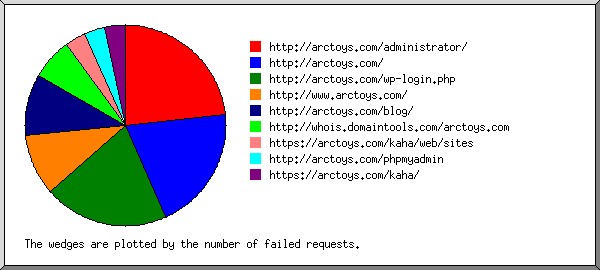
Listing referring URLs, sorted by the number of failed requests.
(Go To: Top | General Summary | Monthly Report | Daily Summary | Hourly Summary | Domain Report | Organization Report | Redirected Referrer Report | Failed Referrer Report | Referring Site Report | Browser Report | Browser Summary | Operating System Report | Status Code Report | File Size Report | File Type Report | Directory Report | Request Report)
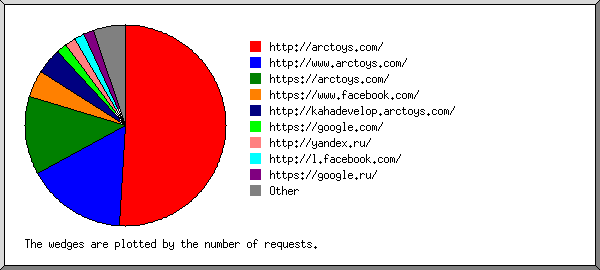
Listing referring sites, sorted by the number of requests.
| #reqs | site |
|---|---|
| 60 | http://arctoys.com/ |
| 19 | http://www.arctoys.com/ |
| 15 | https://arctoys.com/ |
| 5 | https://www.facebook.com/ |
| 5 | http://kahadevelop.arctoys.com/ |
| 2 | https://google.com/ |
| 2 | http://yandex.ru/ |
| 2 | http://l.facebook.com/ |
| 2 | https://google.ru/ |
| 1 | http://anonymizeme.pro/ |
| 1 | http://www.bing.com/ |
| 1 | https://lm.facebook.com/ |
| 1 | http://uptime.com/ |
| 1 | http://m.facebook.com/ |
| 1 | http://ru.wsgiga.com/ |
(Go To: Top | General Summary | Monthly Report | Daily Summary | Hourly Summary | Domain Report | Organization Report | Redirected Referrer Report | Failed Referrer Report | Referring Site Report | Browser Report | Browser Summary | Operating System Report | Status Code Report | File Size Report | File Type Report | Directory Report | Request Report)
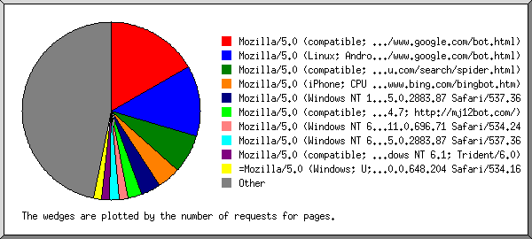
Listing the top 40 browsers by the number of requests for pages, sorted by the number of requests for pages.
| #reqs | #pages | browser |
|---|---|---|
| 80 | 80 | Mozilla/5.0 (compatible; Googlebot/2.1; +http://www.google.com/bot.html) |
| 61 | 61 | Mozilla/5.0 (Linux; Android 6.0.1; Nexus 5X Build/MMB29P) AppleWebKit/537.36 (KHTML, like Gecko) Chrome/41.0.2272.96 Mobile Safari/537.36 (compatible; Googlebot/2.1; +http://www.google.com/bot.html) |
| 33 | 33 | Mozilla/5.0 (compatible; Baiduspider/2.0; +http://www.baidu.com/search/spider.html) |
| 20 | 20 | Mozilla/5.0 (iPhone; CPU iPhone OS 7_0 like Mac OS X) AppleWebKit/537.51.1 (KHTML, like Gecko) Version/7.0 Mobile/11A465 Safari/9537.53 (compatible; bingbot/2.0; +http://www.bing.com/bingbot.htm) |
| 23 | 17 | Mozilla/5.0 (Windows NT 10.0; WOW64) AppleWebKit/537.36 (KHTML, like Gecko) Chrome/55.0.2883.87 Safari/537.36 |
| 12 | 12 | Mozilla/5.0 (compatible; MJ12bot/v1.4.7; http://mj12bot.com/) |
| 8 | 8 | Mozilla/5.0 (Windows NT 6.1; WOW64) AppleWebKit/534.24 (KHTML, like Gecko) Chrome/11.0.696.71 Safari/534.24 |
| 15 | 8 | Mozilla/5.0 (Windows NT 6.1) AppleWebKit/537.36 (KHTML, like Gecko) Chrome/55.0.2883.87 Safari/537.36 |
| 7 | 7 | Mozilla/5.0 (compatible; MSIE 10.0; Windows NT 6.1; Trident/6.0) |
| 7 | 7 | =Mozilla/5.0 (Windows; U; Windows NT 6.1; en-US) AppleWebKit/534.16 (KHTML, like Gecko) Chrome/10.0.648.204 Safari/534.16 |
| 6 | 6 | Mozilla/5.0 (compatible; bingbot/2.0; +http://www.bing.com/bingbot.htm) |
| 6 | 6 | Mozilla/5.0 (Windows NT 6.1; WOW64) AppleWebKit/537.36 (KHTML, like Gecko) Chrome/40.0.2214.115 Safari/537.36 |
| 6 | 6 | Mozilla/4.0 (compatible; MSIE 8.0; Trident/4.0; Windows NT 6.1; SLCC2 2.5.5231; .NET CLR 2.0.50727; .NET CLR 4.1.23457; .NET CLR 4.0.23457; Media Center PC 6.0; MS-WK 8) |
| 9 | 6 | Mozilla/5.0 (compatible; YandexBot/3.0; +http://yandex.com/bots) |
| 6 | 6 | Mozilla/5.0 (iPhone; CPU iPhone OS 6_1_3 like Mac OS X) AppleWebKit/536.26 (KHTML, like Gecko) Version/6.0 Mobile/WK10171 Safari/8536.25 |
| 5 | 5 | Mozilla/5.0 (X11; U; Linux x86_64; en-US) AppleWebKit/533.3 (KHTML, like Gecko) Qt/4.7.1 Safari/533.3 |
| 8 | 5 | Mozilla/5.0 (Macintosh; Intel Mac OS X 10.10; rv:50.0) Gecko/20100101 Firefox/50.0 |
| 5 | 5 | Twitterbot/1.0 |
| 48 | 5 | Mozilla/5.0 (Windows NT 6.1; rv:51.0) Gecko/20100101 Firefox/51.0 |
| 5 | 5 | Mozilla/4.0 (compatible; MSIE 6.0; Windows NT 5.1; SV1;) |
| 5 | 5 | Mozilla/5.0 (compatible; DomainSONOCrawler/0.1; +http://domainsono.com) |
| 7 | 5 | Mozilla/5.0 (Windows NT 6.1; rv:50.0) Gecko/20100101 Firefox/50.0 |
| 4 | 4 | Mozilla/4.0 (compatible; MSIE 7.0; Windows NT 5.2) |
| 18 | 4 | facebookexternalhit/1.1 (+http://www.facebook.com/externalhit_uatext.php) |
| 9 | 4 | Mozilla/5.0 (Android 6.0.1; Mobile; rv:50.0) Gecko/50.0 Firefox/50.0 |
| 11 | 4 | Mozilla/5.0 (iPhone; CPU iPhone OS 10_0_1 like Mac OS X) AppleWebKit/602.1.50 (KHTML, like Gecko) Version/10.0 Mobile/14A403 Safari/602.1 |
| 4 | 4 | Mozilla/5.0 (Windows NT 10.0; Win64; x64; rv:48.0) Gecko/20100101 Firefox/48.0 |
| 3 | 3 | Mozilla/5.0 (Windows NT 6.1; WOW64) AppleWebKit/537.36 (KHTML, like Gecko) Chrome/31.0.1650.57 Safari/537.36 |
| 3 | 3 | Mozilla/5.0 (Windows NT 10.0; WOW64; rv:50.0) Gecko/20100101 Firefox/50.0 |
| 3 | 3 | Mozilla/5.0 (X11; Ubuntu; Linux x86_64; rv:49.0) Gecko/20100101 Firefox/49.0 |
| 3 | 3 | Mozilla/5.0 (Windows NT 6.1) AppleWebKit/537.36 (KHTML, like Gecko) Chrome/27.0.1453.90 Safari/537.36 |
| 3 | 3 | Mozilla/5.0 (compatible; NetcraftSurveyAgent/1.0; +info@netcraft.com) |
| 3 | 3 | SafeDNSBot (https://www.safedns.com/searchbot) |
| 2 | 2 | Mozilla/5.0 (X11; Ubuntu; Linux x86_64; rv:26.0) Gecko/20100101 Firefox/26.0 |
| 2 | 2 | MetaURI API/2.0 +metauri.com |
| 2 | 2 | Mozilla/4.0 (compatible; MSIE 6.0; Windows NT 5.1; SV1) |
| 2 | 2 | Apache-HttpClient/4.4.1 (Java/1.8.0_65) |
| 2 | 2 | Mozilla/5.0 zgrab/0.x |
| 2 | 2 | Mozilla/5.0 (Windows NT 6.1; WOW64) AppleWebKit/537.1 (KHTML, like Gecko) Chrome/21.0.1180.89 Safari/537.1 |
| 2 | 2 | Mozilla/5.0 (Windows NT 10.0; WOW64) AppleWebKit/537.36 (KHTML, like Gecko) Chrome/52.0.2743.116 Safari/537.36 |
| 164 | 106 | [not listed: 92 browsers] |
(Go To: Top | General Summary | Monthly Report | Daily Summary | Hourly Summary | Domain Report | Organization Report | Redirected Referrer Report | Failed Referrer Report | Referring Site Report | Browser Report | Browser Summary | Operating System Report | Status Code Report | File Size Report | File Type Report | Directory Report | Request Report)
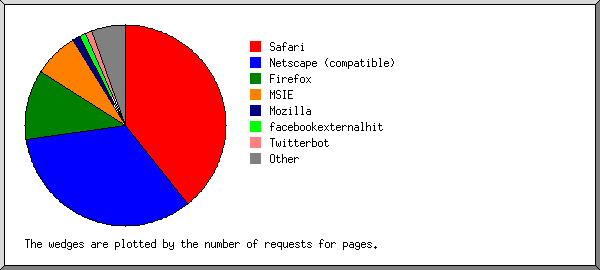
Listing the top 20 browsers by the number of requests for pages, sorted by the number of requests for pages.
| # | #reqs | #pages | browser |
|---|---|---|---|
| 1 | 251 | 187 | Safari |
| 164 | 125 | Safari/537 | |
| 35 | 20 | Safari/9537 | |
| 19 | 19 | Safari/534 | |
| 17 | 7 | Safari/602 | |
| 6 | 6 | Safari/533 | |
| 6 | 6 | Safari/8536 | |
| 2 | 2 | Safari/535 | |
| 1 | 1 | Safari/536 | |
| 1 | 1 | Safari/600 | |
| 2 | 162 | 159 | Netscape (compatible) |
| 3 | 116 | 54 | Firefox |
| 32 | 21 | Firefox/50 | |
| 12 | 8 | Firefox/3 | |
| 54 | 7 | Firefox/51 | |
| 5 | 5 | Firefox/48 | |
| 4 | 4 | Firefox/49 | |
| 3 | 3 | Firefox/0 | |
| 2 | 2 | Firefox/26 | |
| 1 | 1 | Firefox/14 | |
| 1 | 1 | Firefox/25 | |
| 1 | 1 | Firefox/34 | |
| 4 | 35 | 34 | MSIE |
| 11 | 11 | MSIE/8 | |
| 9 | 8 | MSIE/10 | |
| 8 | 8 | MSIE/6 | |
| 7 | 7 | MSIE/7 | |
| 5 | 6 | 6 | Mozilla |
| 6 | 20 | 5 | facebookexternalhit |
| 20 | 5 | facebookexternalhit/1 | |
| 7 | 5 | 5 | Twitterbot |
| 5 | 5 | Twitterbot/1 | |
| 8 | 3 | 3 | SafeDNSBot (https: |
| 3 | 3 | SafeDNSBot (https://www | |
| 9 | 2 | 2 | Java |
| 2 | 2 | Java/1 | |
| 10 | 2 | 2 | Googlebot |
| 2 | 2 | Googlebot/2 | |
| 11 | 2 | 2 | Google-HTTP-Java-Client |
| 2 | 2 | Google-HTTP-Java-Client/1 | |
| 12 | 2 | 2 | redback |
| 2 | 2 | redback/v0-570-g26f8c96 | |
| 13 | 2 | 2 | Apache-HttpClient |
| 2 | 2 | Apache-HttpClient/4 | |
| 14 | 2 | 2 | MetaURI API |
| 2 | 2 | MetaURI API/2 | |
| 15 | 2 | 2 | SocialRankIOBot; http: |
| 2 | 2 | SocialRankIOBot; http://socialrank | |
| 16 | 2 | 1 | TelegramBot (like TwitterBot) |
| 17 | 1 | 1 | DomainCrawler |
| 1 | 1 | DomainCrawler/3 | |
| 18 | 1 | 1 | Mediatoolkitbot (complaints@mediatoolkit.com) |
| 19 | 1 | 1 | Go-http-client |
| 1 | 1 | Go-http-client/1 | |
| 20 | 1 | 1 | scrapy-redis (+https: |
| 1 | 1 | scrapy-redis (+https://github | |
| 6 | 4 | [not listed: 5 browsers] |
(Go To: Top | General Summary | Monthly Report | Daily Summary | Hourly Summary | Domain Report | Organization Report | Redirected Referrer Report | Failed Referrer Report | Referring Site Report | Browser Report | Browser Summary | Operating System Report | Status Code Report | File Size Report | File Type Report | Directory Report | Request Report)
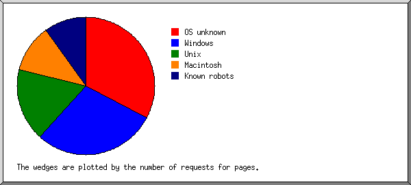
Listing operating systems, sorted by the number of requests for pages.
| # | #reqs | #pages | OS |
|---|---|---|---|
| 1 | 180 | 156 | OS unknown |
| 2 | 220 | 137 | Windows |
| 146 | 79 | Unknown Windows | |
| 43 | 31 | Windows NT | |
| 27 | 23 | Windows XP | |
| 4 | 4 | Windows Server 2003 | |
| 3 | 88 | 82 | Unix |
| 88 | 82 | Linux | |
| 4 | 87 | 54 | Macintosh |
| 5 | 49 | 47 | Known robots |
(Go To: Top | General Summary | Monthly Report | Daily Summary | Hourly Summary | Domain Report | Organization Report | Redirected Referrer Report | Failed Referrer Report | Referring Site Report | Browser Report | Browser Summary | Operating System Report | Status Code Report | File Size Report | File Type Report | Directory Report | Request Report)
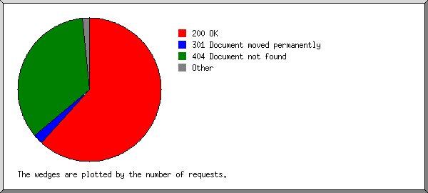
Listing status codes, sorted numerically.
| #reqs | status code |
|---|---|
| 798 | 200 OK |
| 1 | 201 Created |
| 2 | 206 Partial content |
| 27 | 301 Document moved permanently |
| 3 | 304 Not modified since last retrieval |
| 2 | 403 Access forbidden |
| 450 | 404 Document not found |
| 3 | 4xx [Miscellaneous client/user errors] |
| 8 | 500 Internal server error |
(Go To: Top | General Summary | Monthly Report | Daily Summary | Hourly Summary | Domain Report | Organization Report | Redirected Referrer Report | Failed Referrer Report | Referring Site Report | Browser Report | Browser Summary | Operating System Report | Status Code Report | File Size Report | File Type Report | Directory Report | Request Report)
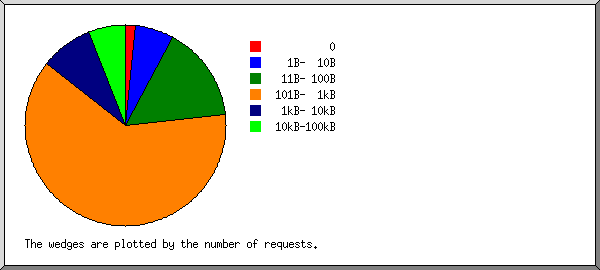
| size | #reqs | %bytes |
|---|---|---|
| 0 | 13 | |
| 1B- 10B | 51 | 0.01% |
| 11B- 100B | 124 | 0.85% |
| 101B- 1kB | 500 | 10.54% |
| 1kB- 10kB | 68 | 14.11% |
| 10kB-100kB | 48 | 74.50% |
(Go To: Top | General Summary | Monthly Report | Daily Summary | Hourly Summary | Domain Report | Organization Report | Redirected Referrer Report | Failed Referrer Report | Referring Site Report | Browser Report | Browser Summary | Operating System Report | Status Code Report | File Size Report | File Type Report | Directory Report | Request Report)
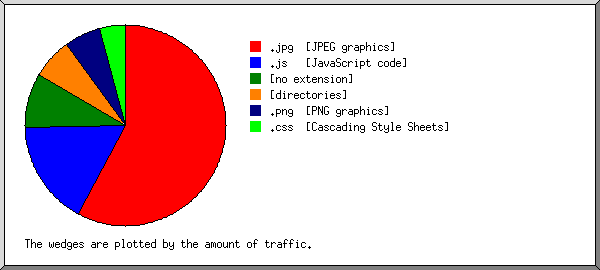
Listing extensions with at least 0.1% of the traffic, sorted by the amount of traffic.
| #reqs | %bytes | extension |
|---|---|---|
| 58 | 57.69% | .jpg [JPEG graphics] |
| 6 | 16.86% | .js [JavaScript code] |
| 208 | 8.87% | [no extension] |
| 489 | 6.58% | [directories] |
| 39 | 5.83% | .png [PNG graphics] |
| 4 | 4.17% | .css [Cascading Style Sheets] |
(Go To: Top | General Summary | Monthly Report | Daily Summary | Hourly Summary | Domain Report | Organization Report | Redirected Referrer Report | Failed Referrer Report | Referring Site Report | Browser Report | Browser Summary | Operating System Report | Status Code Report | File Size Report | File Type Report | Directory Report | Request Report)
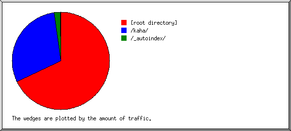
Listing directories with at least 0.01% of the traffic, sorted by the amount of traffic.
| #reqs | %bytes | directory |
|---|---|---|
| 543 | 67.87% | [root directory] |
| 221 | 30.05% | /kaha/ |
| 36 | 1.94% | /_autoindex/ |
| 4 | 0.15% | /cgi-bin/ |
(Go To: Top | General Summary | Monthly Report | Daily Summary | Hourly Summary | Domain Report | Organization Report | Redirected Referrer Report | Failed Referrer Report | Referring Site Report | Browser Report | Browser Summary | Operating System Report | Status Code Report | File Size Report | File Type Report | Directory Report | Request Report)
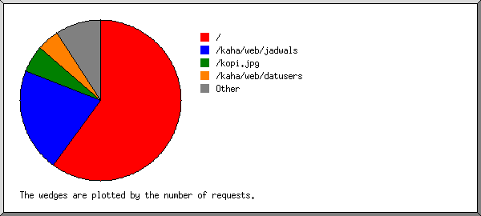
Listing files with at least 20 requests, sorted by the number of requests.
| #reqs | %bytes | last time | file |
|---|---|---|---|
| 482 | 6.29% | Feb/26/17 10:32 AM | / |
| 25 | 0.32% | Feb/23/17 10:25 PM | /?95.85.3.71 |
| 169 | 7.53% | Feb/11/17 9:44 AM | /kaha/web/jadwals |
| 43 | 1.54% | Feb/ 7/17 10:11 PM | /kaha/web/jadwals?ASALBANDARA=CGK&TUJUANBANDARA=SUB&TGLBRGKT=2017-02-07&KELAS=Ekonomi |
| 17 | 0.61% | Feb/ 7/17 9:03 PM | /kaha/web/jadwals?ASALBANDARA=CGK&TUJUANBANDARA=SUB |
| 10 | Feb/ 7/17 9:15 PM | /kaha/web/jadwals?ASALBANDARA=CGK______&TUJUANBANDARA=SUB______&TGLBRGKT=2017-02-07______&KELAS= | |
| 44 | 51.79% | Feb/19/17 6:07 AM | /kopi.jpg |
| 36 | 1.29% | Feb/ 8/17 8:42 AM | /kaha/web/datusers |
| 73 | 33.10% | Feb/23/17 1:48 PM | [not listed: 15 files] |